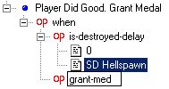

|
|
|
Advanced FRED2 Retail HelpMission DesignSEXPs Variables Arrivals And Exits Events & Objectives Voice Effects Medals And Promotion Cutscenes Debugging and Weirdness Mission DesignHow long does a ship take to recharge jump engines after a jump? The simplest answer is as long as you want it to. There is very little hard data on this. It depends on the ship. SEXPsWhat is the difference between ai-waypoints and ai-waypoints-once? AI-Waypoints-Once does just what you'd expect. The ship follows the way points you've given it and then comes to a rest at the last one. With AI-Waypoints however upon reaching the last waypoint the ship turns and heads for the first waypoint and begins the cycle again. This makes it very useful for setting up patrol routes etc. Can I disable Alpha 1's subsystems? Yep. Fred2 will complain at you but it will work. How do I make a ship jump out at a certain place (e.g. a jump node)? This
depends greatly on the ship. Capships (or any ship that the player
can't make jump out) can be done fairly easily. This is one way. You
have to place a waypoint in the middle of the jump node. You then make
the ship leave when it reaches a suitable distance either from the ship
editor or by changing the ai-goal as shown here.
If you're trying to stop Alpha 1 or a ship that Alpha can order to jump out requires a little more work. First you need to prevent the ship(s) from being able to jump out. Then you need to make it so that the ship can only jump out within a certain distance of the node.
The
second event activates the jump engines when alpha reaches 500m from
the centre of the node. The third event deactivates the engine if alpha
leaves the area around the node. you'll need a repeat count on the
second and third events or alpha 1 might become stuck in the mission.
You might need to alter the distances too since I haven't checked them
(Last time I checked around 700m is a better choice). I noticed you are using never-warp in the above example. Why not break-warp? Never-warp prevents the ship from leaving until the allow-warp order is given. Break-warp merely breaks the jump engine. It can be fixed by the fix-warp SEXP but it can also be repaired by a support ship. This of course means that the player could spoil your carefully crafted "leave only at the node" mission simply by rearming. For this reason Break-warp should only be used when there are no support ships allowed in the mission (or if you want to create a mission where you say that something has broken the players drive and he needs a repair). What is the difference between Ship-Invulnerable and Ship-Guardian? Ship-Invulnerable means that a ship can't be damaged by
anything. No matter what happens the ship will remain at 100% (or
whatever the damage was when it was at when the SEXP triggered).
Ship-Guardian allows a ship to take damage until the ship reaches 1%.
After that the ship becomes invulnerable. Careful use of both can fool
the player and prevent him from realising that the ship is protected (A
wing of ships at 100% at the end of a mission is a big sign that
Ship-Invulnerable was used while a wing at 1% is just as obviously a
sign of Ship-Guardian's use.) How do I make a message come from a ship that isn't actually present? If you look at a mission in FRED you'll notice that all orders from command are actually coming from #command. The # symbol tells FS2 that it's not coming from a ship that is actually present. Simply make the message come from #Whatever. How do I make a Red-alert only occur when the player jumps out?
Easy. Just use an event like this. Replace the -true in the first event
with whatever conditions you want to use to make the mission red alert. VariablesMost beginners regard variables as one of the most confusing
parts of FRED. In actual fact they aren't really that tricky. I was
using them since the first mission I ever FREDded. What confuses most
people is that when they see them being used it's always in big
complicated events so they get lost. I'm going to try to explain simply
how to use them. What is a variable? Since most FREDders aren't from a programming background the first thing that needs explaining is what a variable actually is. How do I make one? You create a new variable by choosing add variable from the right mouse menu in FRED. This opens the Add Variable dialog box which allows you to name your variable and give it a default value.
So how do I use them?
With me so far? Good. Okay, so a variable is a box for putting numbers
into. What use is that? Well quite a lot you see. Because you can place
this box anywhere in FRED where a SEXP is using a number. One important thing to understand is that every time you see
a variable being used in this way you are opening the box and taking a
look at the contents. Whenever a variable is substituted for a number
in a SEXP it is always being looked at. No matter what the SEXP does
the variable will remain unaltered.
Modify-variable does only one thing. Throw out the contents of the
variable mentioned on the first line and replace it with whatever the
second line is (or whatever the second and subsequent lines calculate
to). In the example given to the left the contents of NumberVariable
will be thrown away and replaced by zero. Remember only the variable in
the first line is ever changed. The simplest and most common use for a variable is for counting the number of times something happens. This is done by making an event that says when something happens look at the number in the box, add one to that number, put that new value in the box. The SEXP to do that looks like this.
The modify-variable SEXP tells you that we are going to change the
contents of a variable. The next line tells us that the name of the
variable is NumberVariable (It also tells us the default value is
zero). The line after that tells us what value to set NumberVariable
to. In this case it doesn't give us a number but instead gives us a
SEXP that has to be evaluated to find out what the desired number is.
The SEXP is simply the addition of two numbers. The first number is the
contents of NumberVariable and the second value is one. So after the
SEXP is finished we'll have added 1 to whatever the value of
NumberVariable was (Which you may remember was what we were after!) Alright. I can use them. I still don't get what I'd use them for? Okay so now you now know how to make a counter. What use is
that? Well the FRED2 Walkthrough has a good example of a counter. In
that mission you have 4 troop transports attempting to capture an
Orion. The transports will dock with the Orion. Spend a little while
disgorging troops and then undock. If two of the troopships manage to
successfully dock with the Orion then it is captured by the enemy
forces. In the walkthrough they used variables as a way of achieving
this. Basically they defined a variable called DockCount and added 1 to
it every time one of the troop transports managed to successfully dock.
When the value of the variable was 2 then the Orion could be captured
and a simple when DockCount = 2 type event could be used to test this. First
you set up a variable called timedocked (with an initial value of 0).
Then you set up a repeating event for each transport that looks
something like the one on the left (Lots of repeats, repeat every
second). You'll need copies of this event for Transport 2, 3 and 4. As you can see there is no way you could do what we have just
done without variables. With them we've done it in just five events
(One for each transport plus one to check if the Orion has been
captured). It is this sort of power that makes variables worth the
trouble they are to use. I've seen missions that have hideously
complicated logic to them that I could have solved in one or two events
by using variables. Eventually missions reach the kind of complexity
where it's much easier to just try to learn how variables work than it
is to try to write the mission without them. Arrivals And ExitsI've set Beta and/or Gamma wing as a reinforcement. Fred keeps complaining at me. Ignore it. The ships should work fine in game. FRED doesn't
like either wing being reinforcements so you can get rid of the error
(if it annoys you) by setting them to some other wing but either way it
will work fine in the game. Remember that doing so will prevent the
player from arming those ships during the game as only ships in Alpha,
Beta and Gamma wing appear in the loadout screen. How do I make reinforcements only appear later in a mission? Same way you make other ships appear later. Set the arrival
cue. If you do this for a reinforcement unit it will remain greyed out
until the arrival cue becomes true. After that the player will be able
to call the ship in (don't forget to remind the player that the
reinforcements are now available) Events & ObjectivesWhat is an invalid objective and how does that differ from a bonus objective? When
making objectives in the objective editor you may have noticed the
little Objective Invalid tick box and wondered what it does. To explain
let's take an example mission. Suppose you're FREDding a mission where
you're going to destroy a Moloch corvette. When the mission starts
however you find the Moloch taking on supplies from a Demon class
destroyer. Command order you to ignore the Moloch for now and
concentrate on the Demon. Now look at your objectives. Having the
destruction of the Moloch as a primary goal while the destruction of
the demon is a bonus seems ludicrous. In addition to this the Destroy
Demon objective will only appear on the objectives list after you have
destroyed it. This is where invalid objectives come into their own. The game
completely ignores the objective until an event using the validate-goal
SEXP is triggered. After this the game treats the goal normally. So
basically you've suddenly made a Destroy Demon primary goal appear as
if by magic. Goal validation doesn't end there though. Just as you can
validate goals you can also invalidate them. For instance at the moment
destroying the demon and the Moloch are both primary goals. If you fail
to kill the Moloch you won't get the full victory music even though you
did better than the mission briefing expected of you. What you can do
in this case is use the invalidate-goal SEXP to make the Destroy Moloch
goal invalid. The game will now ignore it. It's worth noting that bonus goals can also be invalid too. You could have a Destroy Cain bonus which only becomes valid once the Moloch and Demon have been destroyed or have departed. In that way you get a bonus if you destroy all three but get shouted at if you ignore the Moloch in favour of the Cain. Voice EffectsHow can I make voice effects? There are two main programs used by the FreeSpace community. Goldwave and CoolEdit The programs are fairly easy to learn how to use. Goldwave is shareware but it will only start to nag you after 100 operations which should be enough to allow you to make a few voices. How can I make Vasudan effects? Goldwave has a rather cool mechanise special effect that is pretty close to the one used in the game. Medals And PromotionHow do I give out a medal? Medals are given out by the special grant-medal SEXP. Don't
bother looking for it on the list unless you're using the SCP version
of FRED cause it isn't there. What you need to do is create an event
and then manually change the do-nothing into grant medal. You can then
pick which medal you wish to grant.

How do I put ships in the tech database? Using the tech-add-ships SEXP. As with the grant-medal SEXP
you have to type this one in manually unless you're using the SCP
version. CutscenesHow can I have new cutscenes in my campaign? Short answer. You can't. FS2_Open can do it but retail can not. Debugging and WeirdnessSince certain problems only show up during debugging or seem to defy all logic I'll put some of these problems here I have an event that is supposed to occur when a ship is 50% damaged but it isn't happening
The
problem might be that you have an event like the one on the left in
your campaign. The problem with this event is that it only comes true
when the ship hits 50%. However certain kinds of weapons don't cycle
the counter down but change hits-left immediately (e.g. from 51% to 47%
without passing through the intervening numbers). The result is that
the event is never triggered since the ship was never 50% damaged. This
problem is easily solved though. Instead of triggering when the ship is
at 50% the event on the right triggers as soon as the ship is less than
50%. Thereby avoiding the problem. (I
suppose I should have set that to 51% actually so that the event would
trigger when the hull was 50% rather than 49% as it is now)
I still can't get an event in my campaign to work The first thing to find out is if the event is happening at
all. Messages are the simplest way to do this. If the event has a
message and you aren't seeing the message then it isn't being triggered
for some reason. If there isn't a message add one and see if it goes
off. If it doesn't add one to events that it is dependant on and see if
they are triggered. By using this method you can trace the SEXP that
isn't working. When the mission starts the clock says it's 2 minutes into the mission. Other weird things have also happened. This is the infamous player entry delay error. It is caused by having too many ships in the ships.tbl You can't really do anything about it except reduce the number of ships in your table. Once you've trimmed down the number of ships in the table you can salvage your mission by opening it up in notepad. Look for a line that says "+Player Entry Delay:" The number afterwards probably says something like ~120 Change that number to 2.0000 (everyone says 0 but when I looked at working missions of mine the number there was 2) and your mission should work. I've entered some text into FRED and it looks fine but then it disappears when I save Was the text within quotation marks (")? Due to the way FS2 mission files are set out FS2 views the first quotation mark it sees as the end of the message and doesn't parse anything further. Just don't use quote marks in briefings, debriefings or messages and the problem should go away. Don't use semi-colons either for that matter. I've entered a message in FRED and it looks fine but then it disappears when I choose another message and then go back. The message properties I set have also been wiped. This is due to a bug in FRED. You should only edit messages when that message is highlighted in the message list. I've written a mission but all the capships seem to be strangely invulnerable/My shots are going straight through ships. This is another of the problems caused by Battle of Endor Syndrome.
Basically you've tried to make your mission too big and FS2 can't do
the collision detection on every new object the game creates (like
laser bolts and beams). As a result these things don't collide with
anything and simply go straight through capships without damaging them.
The only solution is to scale down your mission or use FS2_Open which
is slightly better at handling this sort of thing. |